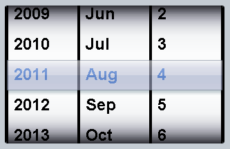

Documentation
dojox/mobile/SpinWheelDatePicker¶
| Authors: | Yoshiroh Kamiyama |
|---|---|
| Developers: | Yoshiroh Kamiyama |
| since: | V1.7 |
Introduction¶
SpinWheelDatePicker is a date picker widget. It is a subclass of dojox/mobile/SpinWheel. It has the year, month, and day slots.
Constructor Parameters¶
Inherited from dojox/mobile/_DatePickerMixin¶
| Parameter | Type | Default | Description |
| yearPattern | String | “yyyy” | A pattern to be used to format year. |
| monthPattern | String | “MMM” | A pattern to be used to format month. |
| dayPattern | String | “d” | A pattern to be used to format day. |
Parameters from this widget¶
| Parameter | Type | Default | Description |
| value | String | null | The initial value to be displayed. The value should be an ISO date string. (ex. “2000-10-24”) |
| values | Array | null | The initial value to be displayed. The value should be an array of integers. (ex. [2000,10,24]) |
Examples¶
Declarative example¶
require([
"dojox/mobile/parser",
"dojox/mobile/SpinWheelDatePicker"
]);
<div id="spin1" data-dojo-type="dojox/mobile/SpinWheelDatePicker"></div>
Programmatic example¶
require([
"dojo/_base/window",
"dojo/ready",
"dojox/mobile/SpinWheelDatePicker",
"dojox/mobile/parser"
], function(win, ready, registry, SpinWheelDatePicker){
ready(function(){
var widget = new SpinWheelDatePicker({id:"spin1"});
win.body().appendChild(widget.domNode);
widget.startup();
});
});
Setting the date with the ISO date string¶
registry.byId("spin1").set("value", "2012-10-06"); // Oct 6, 2012
Setting the date with a number array¶
registry.byId("spin1").set("values", [2012, 10, 6]); // Oct 6, 2012